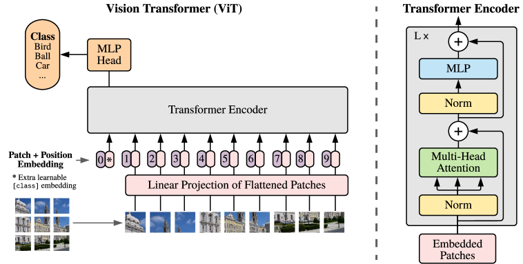
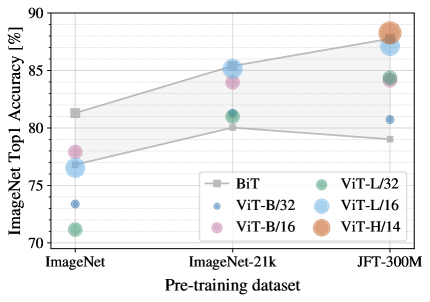
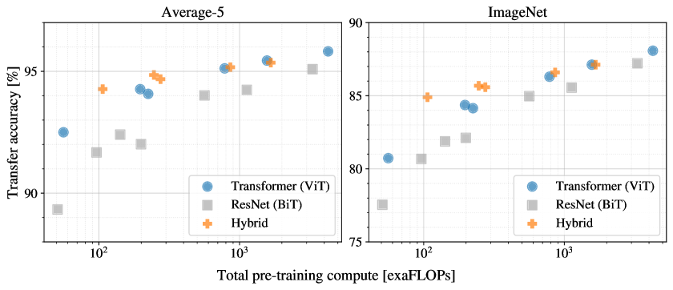
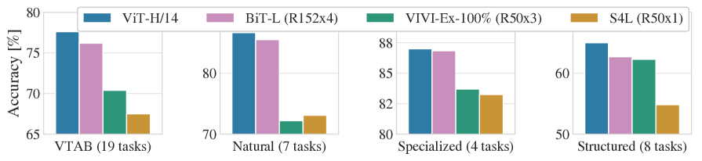
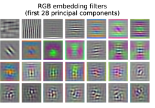
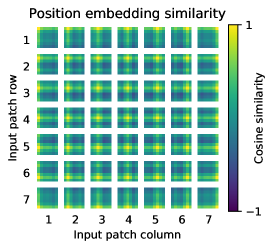
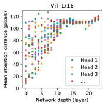
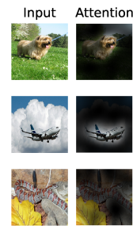

An Image Is Worth 16x16 Words: How Vision Transformers Work

By 2020, the Transformer had conquered natural language processing. But computer vision was still ruled by convolutional neural networks (CNNs), which had dominated for nearly a decade. Then a team at Google Brain asked a wonderfully simple, almost reckless question:
What if we stop treating an image as a grid of pixels, and instead treat it as a sequence of words — and feed it to a standard Transformer? No convolutions at all.
The paper is "An Image is Worth 16x16 Words" (Dosovitskiy et al., ICLR 2021), and the model it introduced is the Vision Transformer (ViT).
🎬 Watch the full 8-minute explainer:
▶️ Direct link: youtu.be/UwxeaIX0rZ4
⚡ Short on time? Here's the ~2-minute version — "Vision Transformers, explained fast."
▶️ Short: youtube.com/shorts/Whe0zU4WlFk
Two Worlds of Deep Learning
To see why this is bold, picture two separate worlds. In language, the Transformer reigns: pure attention, very few assumptions baked in, and it scales beautifully — pour in more data and compute and it just keeps getting better. In vision, convolutional networks reign, carrying strong hand-designed assumptions about how images work.
These worlds had grown up apart. ViT's wager is that the clean, scalable language recipe could be applied — almost unchanged — directly to pixels.
Step 1: Turn Patches Into Tokens
The whole trick is a translation step that lets an image pretend to be a sentence.
Take a typical $224 \times 224$ image and cut it into a grid of fixed $16 \times 16$ patches. That gives $14 \times 14 = 196$ patches. Flatten each one — $16 \times 16$ pixels across 3 color channels is just a list of $16 \cdot 16 \cdot 3 = 768$ numbers — and pass it through a single linear layer. Each patch becomes one neat token vector.
An image is now, quite literally, a sentence of 196 tokens.
Step 2: Position Embeddings + a [class] Token
There's a subtlety: self-attention is order-blind. Shuffle the tokens and it can't tell — which is a disaster for image patches, where where a patch sits clearly matters.
So we add a learned position embedding to every patch (a little vector that says "where I came from"). Then we borrow one more trick from language models: prepend a single extra learnable [class] token. After the network runs, that token's final state serves as the summary of the whole image, and it's what we classify.
Step 3: Just a Transformer
Now the easy part — because there's almost nothing left to invent. The sequence of patch tokens, plus positions and the [class] token, is fed into a completely standard Transformer encoder, the same design used for text. Inside, multi-head self-attention lets every patch directly look at every other patch, anywhere in the image, from the very first layer.
Notice what's missing: no convolutions, no pooling. Almost nothing about images is hard-coded. The model has to learn how vision works from scratch.
The Catch: It's Data-Hungry

This is the paper's most important result. Trained only on ImageNet (a medium dataset), ViT actually loses to the convolutional baseline (the gray line). Pre-train on the larger ImageNet-21k and it catches up. Pre-train on JFT-300M (300 million images) and the Transformers (the colored dots) pull clearly ahead.
The lesson: this model is hungry. Give it enough data, and it overtakes the networks that ruled vision for years.
Why so hungry?
It comes down to inductive bias — the assumptions baked into a model before it sees any data. A CNN has two powerful ones built in:
- Locality — nearby pixels belong together.
- Translation equivariance — an object is the same wherever it appears.
ViT is handed almost none of this. It must learn those facts about images itself, and learning them from scratch simply takes far more examples.
But Efficient With Compute

Here's the flip side that got people excited. Plot performance against pre-training compute, and the Vision Transformers (blue dots) sit above the ResNets (gray squares) almost everywhere. For a fixed compute budget, ViT tends to reach higher accuracy. Scalable and efficient — exactly the combination that made the language Transformer so dominant.
State of the Art

The payoff was real. The largest model, ViT-H/14, pre-trained on JFT and transferred, matched or beat the best convolutional systems of the day across a wide sweep of benchmarks — the 19-task VTAB suite, natural images, specialized (medical/satellite) imagery, and structured tasks — while taking substantially less compute to pre-train than the top CNN competitor.
What Did It Learn Inside?
It works — but does it learn anything sensible, or just memorize? The authors looked, and the answer is reassuring.

Filters. Visualizing the very first linear patch-embedding layer reveals filters that look like edge detectors, color blobs, and textures — strikingly similar to the first layer of a CNN. Given freedom and data, ViT rediscovered the same basic visual building blocks by itself.

2D layout. Those position embeddings started as random vectors with no notion of geometry. This grid shows how similar each patch's learned position vector is to every other. The bright row/column structure means patches in the same row or column ended up with similar embeddings — the model figured out the two-dimensional layout of the image, purely from data.

Global attention from the start. A convolution sees only a tiny local window early on; its view widens slowly with depth. This plot measures how far each attention head looks on average. Even in the first layers, some heads already reach right across the whole image, while others stay local. ViT can be global from layer one — and learns to use both near and far information at once.

Looking at the right things. Trace what the model attends to, from its output back to the input pixels, and it consistently focuses on what matters: the dog (not the grass), the airplane (not the sky), the snake (not the leaves). With no built-in notion of objects, ViT learns to attend to semantically meaningful regions.
Why It Mattered
The significance is hard to overstate. This paper showed that convolutions — long thought essential to vision — are not actually required. With enough scale, a plain Transformer and raw attention can match or beat them. It meant a single architecture could span both language and vision, a major step toward unified models. And it opened the floodgates: the Vision Transformer became a foundation for much of modern computer vision that followed.
Sometimes the boldest idea is to take what already works — and simply refuse to complicate it.
⏱️ Chapters
| Time | Section |
|---|---|
| 0:00 | An Image Is Worth 16x16 Words |
| 0:36 | Two Worlds: CNNs vs Transformers |
| 1:09 | The Vision Transformer Architecture |
| 1:39 | Step 1: Patches Become Tokens |
| 2:11 | Step 2: Position + [class] Token |
| 2:44 | Step 3: Just a Transformer Encoder |
| 3:17 | The Catch: It's Data-Hungry |
| 3:51 | Why So Hungry? (Inductive Bias) |
| 4:26 | Efficient With Compute |
| 4:58 | State of the Art (VTAB) |
| 5:30 | What It Learns: Filters |
| 6:00 | It Learns the 2D Layout |
| 6:28 | Global Attention From the Start |
| 6:57 | Looking at the Right Things |
| 7:24 | Why It Mattered |
Source: Alexey Dosovitskiy, Lucas Beyer, Alexander Kolesnikov, Dirk Weissenborn, Xiaohua Zhai, Thomas Unterthiner, Mostafa Dehghani, Matthias Minderer, Georg Heigold, Sylvain Gelly, Jakob Uszkoreit & Neil Houlsby, "An Image is Worth 16x16 Words: Transformers for Image Recognition at Scale," ICLR 2021 (arXiv:2010.11929). All figures are from the paper and © the authors, shown here for educational explanation.
We're brand new to YouTube — if this helped, please subscribe and like; it genuinely keeps these explainers coming. Thanks for reading! 🙏
Cite this post
Auto-generated. Verify for your institution's requirements.